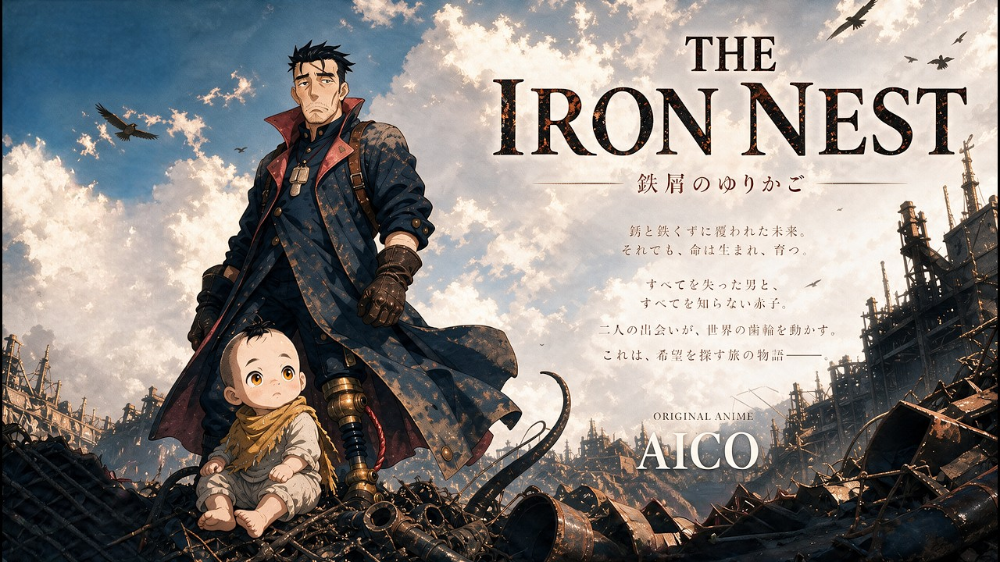
WFAIA 2026 / TRIPLE AWARD WINNERORIGINAL SHORT FILM / 2026
THE IRON NEST
鉄屑のゆりかご
IMAGINED WORLDS. REAL EMOTIONS.
AI ANIMATION & FILMS
まだない世界に、
忘れられない感情を。
BEYOND THE FRAME.
存在しない世界に、息づくキャラクター。
その一瞬に、私たち自身の感情が重なる。
切なさも、可笑しさも、胸が熱くなる瞬間も。
AIの想像力と、物語を紡ぐ人のまなざしで、
観終えたあとも心に残るアニメーションを。
それが、AICOの映像づくり。

WFAIA 2026 / TRIPLE AWARD WINNERORIGINAL SHORT FILM / 2026
鉄屑のゆりかご
ORIGINAL SERIES / 終末短編シリーズ
日常が、見知らぬ世界に変わる。
終末を舞台に描く、AICOのオリジナルシリーズ。
第1話「あいつらが帰ってきた」
Instagramで観るInstagram 34万回再生シリーズの掲載実績
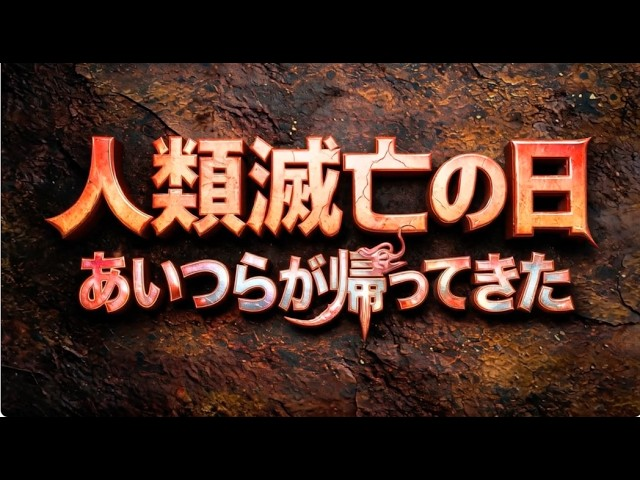
音楽、アクション、まだ見ぬ物語。
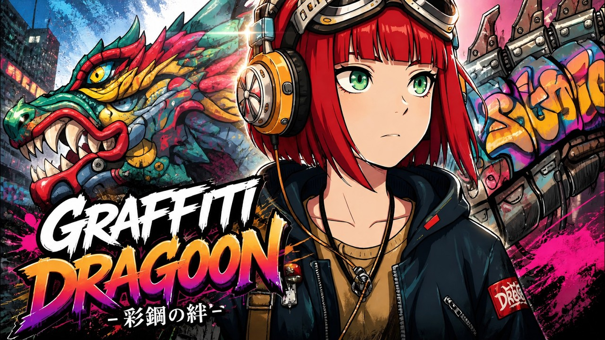
彩鋼の絆
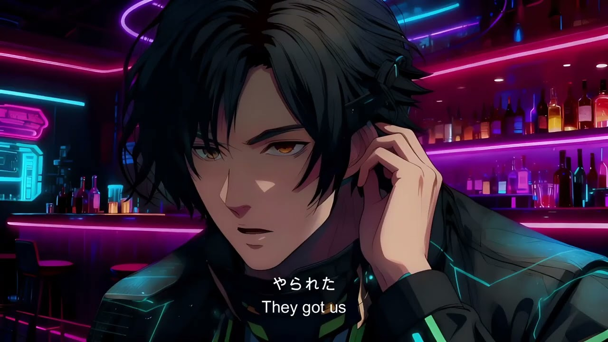
Episode 1
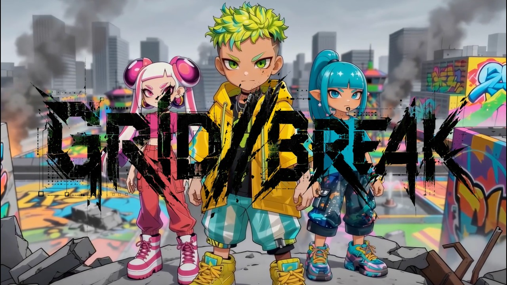
第1話「カクカクした世界」
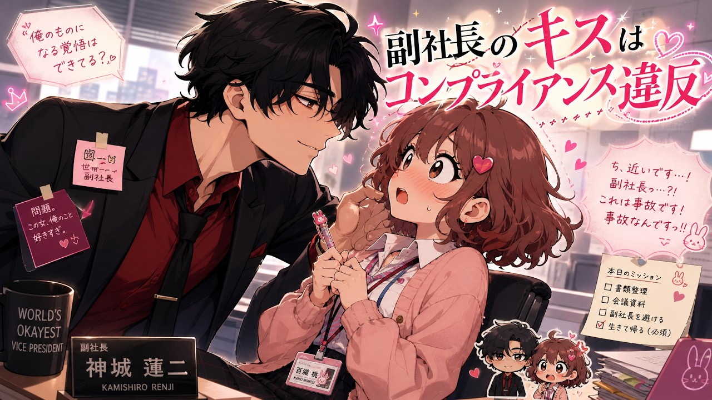
恋愛ミュージックビデオ
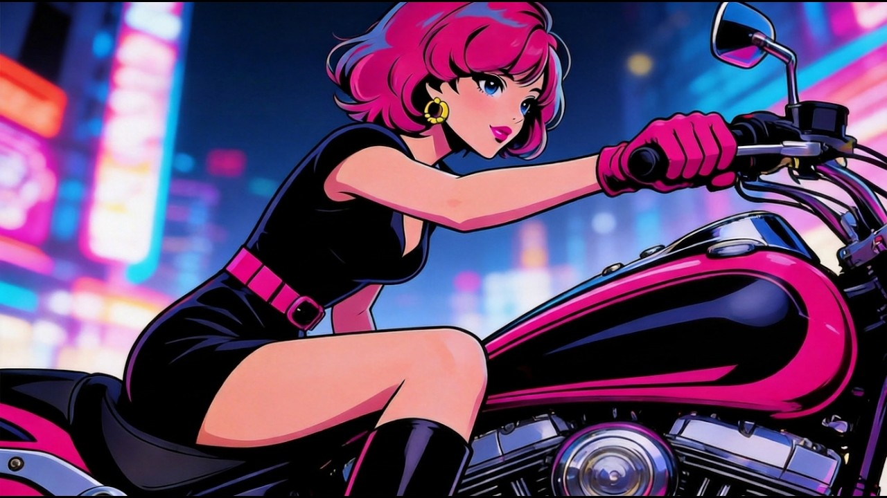
その魂に火をつけろ
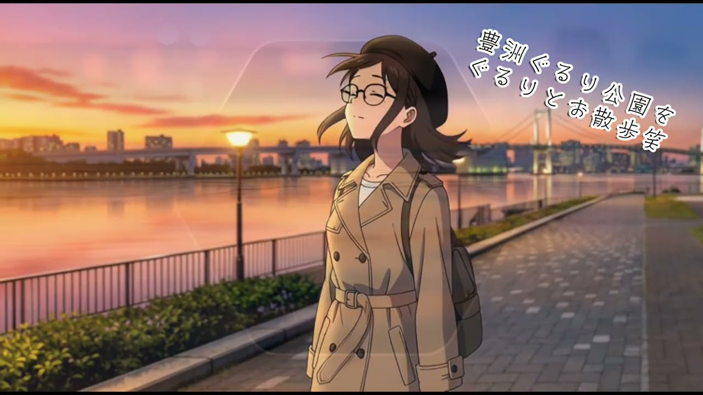
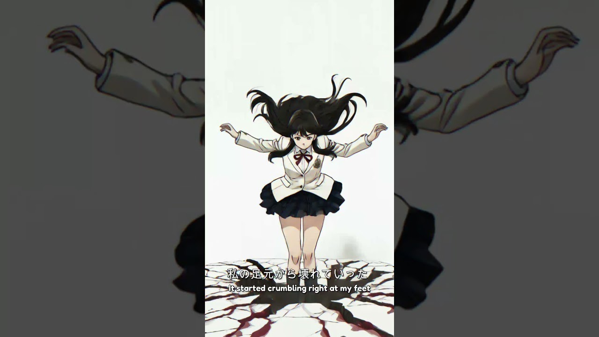
午前0時に真の力に目覚める
広告表現から、チームでつくる映像まで。
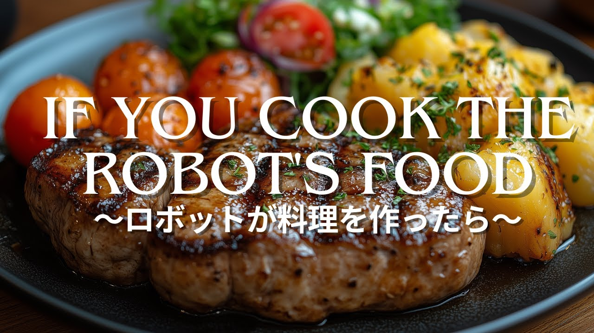
AOI Pro. 技術部門 優秀賞
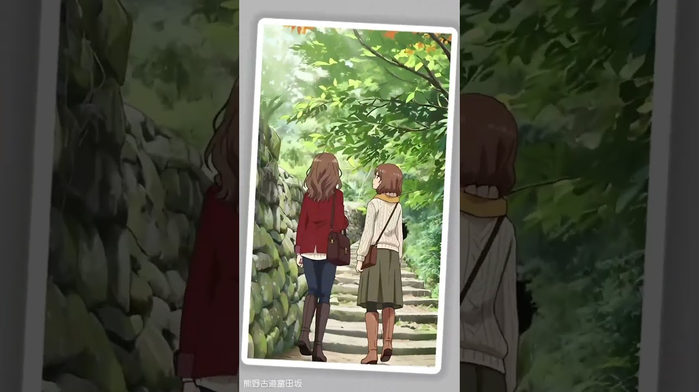
SOZO美術館 コンペティション 1位
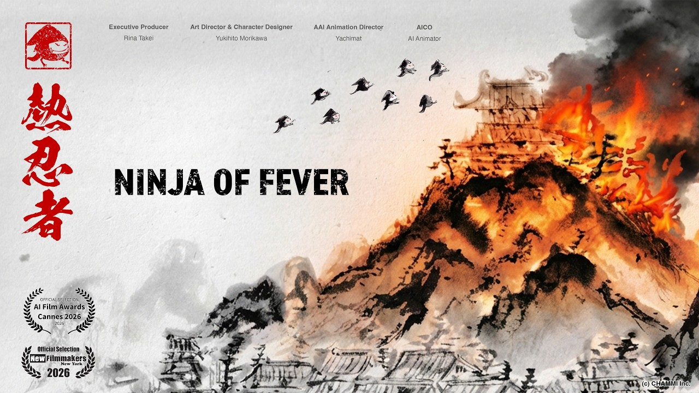
熱忍者 / アシスタントとして参加
WORLD Floyo CREATIVE AWARDS 2026 in Tokyo
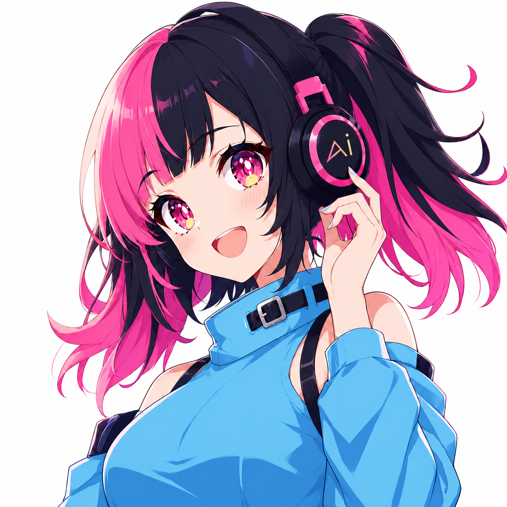
AICO AI ANIMATION CREATOR / JAPAN
2024年よりAI映像制作を開始。オリジナルIPの世界観づくりから、脚本・絵コンテ、映像演出、音楽・編集まで。AI×ANIMEを軸に、感情に響く物語を制作しています。
世界観とキャラクター、脚本、絵コンテ。届けたい感情から、映像の軸をつくる。
STORY / SCRIPT / STORYBOARD生成AIでビジュアルを構築。表情、動き、カメラワークを重ねて演出する。
Midjourney / Seedance音楽、声、編集で物語のリズムを整える。公開後の反応も、次の作品へつなげる。
Suno / TTS / EDITING